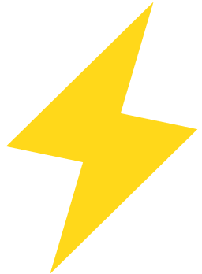
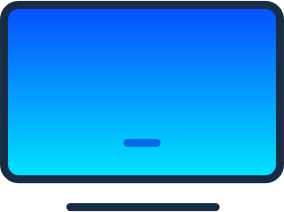
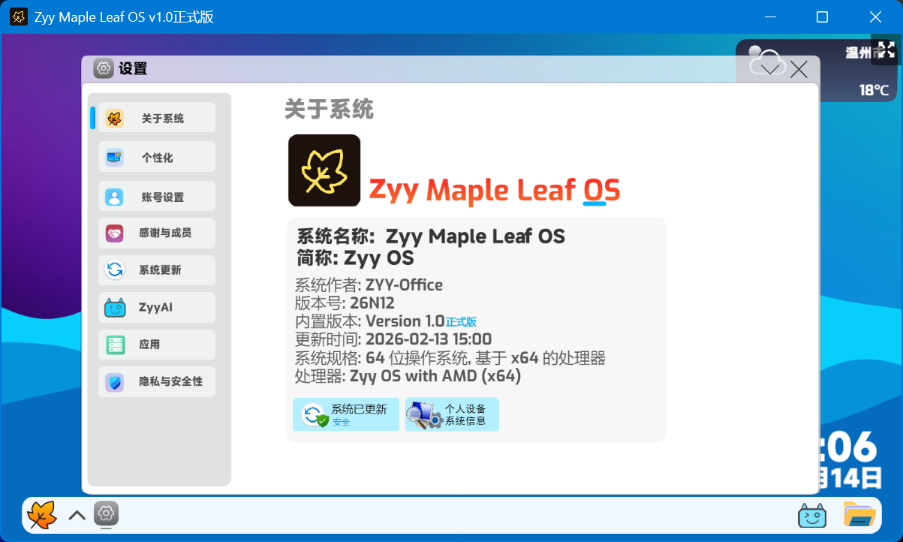

真正可独立运行的 Scratch 操作系统
革命性的操作系统体验
纯粹体验
去除冗余设计，还原最纯粹的操作系统交互逻辑

极速响应
该系统将Scratch编程体验提升到全新高度。无需宿主系统，独立运行，极致性能
安全沙盒
创新的权限管理系统，每个应用在隔离环境中运行，保护核心系统安全，防止恶意代码破坏系统稳定性。

多端支持
- 支持 x86 和 ARM 架构，可在 PC、树莓派、教育平板等多种设备上运行，满足不同场景需求。
正式版：
v1.0 (26N12)
📥 立即下载体验
这个安装程序有安装密码，请先给
这个视频
三连，然后
关注并私信作者
获取安装密码。

《Zyy Maple Leaf OS使用协议》
《Zyy Maple Leaf OS使用协议》 欢迎使用由ZYY-Office开发的Zyy Maple Leaf OS！ 在您开始使用本作品之前，请您务必仔细阅读并理解以下条款。本协议是您与ZYY-Office（以下简称"我们"）之间关于Zyy Maple Leaf OS（以下简称"本作品"）的使用协议。一旦您下载、安装或使用Zyy Maple Leaf OS，即表示您已充分理解并同意接受本协议所有条款的约束。如果您不同意本协议的任何内容，请勿使用本作品。 一、作品性质与用途声明 1. 创意作品属性：Zyy Maple Leaf OS 是由 ZYY-Office 基于 02Engine 平台（Scratch 改版）开发的一款创意伪系统。本作品的名称、界面设计及模拟功能仅用于创意表达和娱乐目的，其表现形式并非指代任何真实的计算机操作系统。 2. 开发初衷：本作品的开发初衷是出于对编程技术的热爱、学习与探索，旨在通过模拟操作系统界面和交互逻辑，为用户提供一种富有创意和趣味性的互动体验，帮助用户感受编程的魅力和计算机操作的基本原理。 3. 使用限制：重要提示：本作品仅限于娱乐和教育目的使用。它不具有任何实际操作系统所具备的功能、性能、安全性及稳定性，不能用于替代任何真实的操作系统来满足您日常的计算机使用、数据处理或商业运营等需求。我们不对因将本作品误用为实际操作系统而产生的任何后果承担责任。 二、知识产权与版权声明 1. 版权归属：Zyy Maple Leaf OS 是基于 zxLeaf OS 的灵感进行改编和二次创作的作品，ZYY-Office 已承认有部分功能是模仿 zxLeaf OS 的。原版 zxLeaf OS 的作者为 ZX34，我们在此对原作者的贡献表示感谢。本作品（包括但不限于修改后的代码、新增及修改后的界面设计、图标、文字、音效等所有元素）的知识产权及相关权益，除注明属于原作者的部分外，均归 ZYY-Office 所有，并受《中华人民共和国著作权法》及其他相关法律法规及国际条约的保护。 2. 许可范围：我们授予您一项个人的、非独家的、不可转让的、仅限于非商业用途的许可，允许您下载、安装并在您的设备上运行本作品，仅供您个人学习、研究和娱乐之用。 3. 限制条款：未经 ZYY-Office 的事先书面明确授权，您不得复制、反编译或以其他方式试图获取本作品的源代码，基于本软件进行任何商业性的开发、运营或提供服务，侵犯我们或任何第三方（如原作者 ZX34）与本作品相关的任何知识产权。 4. 商业授权：如果您希望将 Zyy Maple Leaf OS 用于商业目的，或进行深度的二次开发、定制化合作，请通过以下方式与我们联系，我们将根据具体情况评估并提供相应的授权，请联系QQ: 3918080979 （添加时请务必标注来意）。 三、隐私保护与数据安全 1. 数据收集与使用：为了提供特定的功能（如天气信息查询功能），本软件在运行过程中会获取您设备的大致地理位置信息。我们承诺，该信息仅用于上述功能的正常运行，以增强您的使用体验。 2. 隐私承诺：我们非常尊重并致力于保护您的个人隐私。除上述明确说明的大致地理位置信息外，本软件不会收集、存储、使用或传输您的任何其他个人身份信息、敏感数据、通讯内容或其他隐私信息。 3. 风险提示：鉴于本软件基于 02Engine 平台开发，且运行环境可能涉及复杂的网络状况，我们无法绝对保证在数据传输和处理过程中完全不存在任何泄露风险。因此，我们强烈建议您在使用本软件时，不要输入任何您认为敏感、机密或重要的个人信息。 4. 用户选择：如果您不同意本软件获取大致地理位置信息，相关的功能可能无法正常使用。 四、免责声明 1. 本软件及其中包含的所有功能均不带任何明示或默示的担保。我们不保证本软件能满足您的特定需求，也不保证本软件的运行不会中断、及时、安全或无错误。 2. 无间接损害责任：在任何情况下，ZYY-Office 或其关联方均不对您因使用或无法使用本软件而产生的任何直接、间接、偶然、特殊或后果性的损害（包括但不限于数据丢失、利润损失、商誉损害或业务中断等）承担责任。 3. 第三方内容：本软件可能包含指向第三方网站或资源的链接。我们不对这些第三方内容的准确性、合法性或安全性做任何保证，您访问这些内容的风险由您自行承担。 五、协议的变更 我们保留随时修改本协议的权利。我们可能会通过在相关平台发布公告或在作品内提示的方式通知您协议的变更。如果您在协议修改后继续使用本作品，即视为您已接受修改后的协议。如果您不同意修改后的协议，请停止使用本作品。 最后更新日期：2026年2月14日 10：44
同意
不同意
 纯粹体验
纯粹体验 安全沙盒
安全沙盒